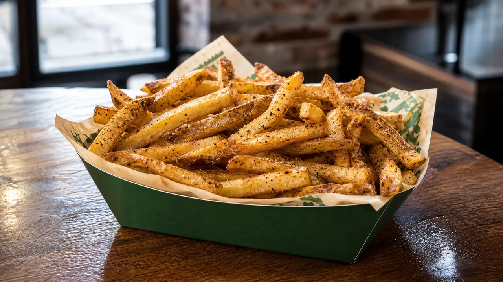

MENU GUIDE · UPDATED AUGUST 13, 2026
Wingstop Fries and Sides Guide: Compare Every Side

Wingstop sides are not interchangeable. Seasoned fries are the reliable default, loaded fries behave almost like a second entrée, Cajun Fried Corn brings spice and texture, and veggie sticks are best when the wings are already rich.
Wingstop side-by-side comparison
| Side | Flavor and texture | Pairs best with |
|---|---|---|
| Seasoned Fries | Sweet-savory seasoning; soft-centered fries | Original Hot, Cajun or plain wings |
| Cheese Fries | Richer and heavier | Dry rubs and a lighter drink |
| Louisiana Voodoo Fries | Loaded, creamy, spicy-savory | Mild wings or a shared meal |
| Buffalo Ranch Fries | Tangy heat plus cool ranch | Garlic Parmesan or plain wings |
| Cajun Fried Corn | Juicy corn with peppery seasoning | BBQ, Lemon Pepper or Original Hot |
| Veggie Sticks | Cold, clean crunch | Atomic, Mango Habanero or rich sauces |
Wingstop Seasoned Fries Set the Baseline
For the item-specific breakdown, including portion and ordering details, see our Wingstop Seasoned Fries guide.
Wingstop's signature seasoning makes these fries noticeably different from plain salted fast-food fries. They work best when eaten promptly; sealed containers trap steam during delivery. If you are ordering several loaded items, regular fries provide contrast without competing with the wings.
Loaded Wingstop Fries Work Best for Sharing
Compare the individual guides to Cheese Fries, Louisiana Voodoo Fries and Buffalo Ranch Fries when you need more detail than this category overview.
Cheese Fries, Louisiana Voodoo Fries and Buffalo Ranch Fries add sauces or toppings, so treat them as shared dishes rather than automatic upgrades. Voodoo Fries are the boldest choice and can overwhelm an equally rich wing flavor. Pair them with Lemon Pepper, Plain or a straightforward hot sauce. Buffalo Ranch Fries already combine heat and creaminess, so they are redundant beside heavily sauced wings and multiple dips.
Cajun Fried Corn deserves a separate lane
Corn adds a juicy bite and avoids the all-potato sameness of a large group order. Its Cajun seasoning makes it flavorful enough to stand beside mild wings, yet it does not need another dip. Significant seasoning and sodium may still affect the meal, so consult the current nutrition data if those numbers guide your order.
Are veggie sticks the healthiest Wingstop side?
They are the simplest side and generally the easiest way to add fresh crunch, but “healthiest” depends on the whole order and the dip. Ranch or bleu cheese changes the calorie, fat and sodium total. Veggie sticks work as a palate reset between sweet-hot or high-heat wings; they do not automatically turn the meal into health food.
Best side pairings by wing flavor
- Atomic or Mango Habanero: veggie sticks and ranch help manage heat.
- Garlic Parmesan: Cajun Fried Corn adds spice and avoids stacking creamy flavors.
- Lemon Pepper or Louisiana Rub: seasoned fries reinforce the dry, savory profile.
- Original Hot: seasoned fries are classic; veggie sticks keep the order balanced.
- Hickory Smoked BBQ: Cajun Fried Corn adds contrast to the sweet-smoky sauce.
Explore each sauce’s heat and style in our Wingstop flavors guide.
Keep Wingstop Sides in Better Shape During Delivery
Fries deteriorate faster than wings. Choose the closest reliable location, avoid unnecessary stops after pickup and open the fry container briefly if condensation is building. Loaded fries are less dependent on crispness, but their toppings can pool during a long trip. For a distant delivery, Cajun Fried Corn or veggie sticks may arrive more predictably.
Seasoning and customization
Wingstop’s fries are known for a sweet-and-savory seasoning rather than a plain salt finish. That profile is the point for many fans, but it can surprise someone expecting neutral fries. If the local ordering interface offers seasoning choices, select deliberately. Requests such as light seasoning or extra seasoning can change both the taste and the nutrition profile, and not every location handles off-menu requests the same way.
Extra seasoning does not necessarily improve loaded fries. Cheese, ranch-style toppings and hot sauce already bring salt and intensity. A simpler base usually makes those toppings easier to distinguish. With plain seasoned fries, however, a small amount of ranch or bleu cheese can turn the side into a separate flavor experience.
Regular or large fries?
A regular size is the right baseline for one person because the wings and dip also contribute to fullness. A large works better for two people who agree on the same side, or for a family ordering other dishes. Do not choose large simply because the cost per ounce appears lower. Value disappears when fries cool before anyone reaches them.
For group orders, two regular sides can be more flexible than one large: you can keep one plain, load the other, or place them at different ends of a table. Local checkout provides the final size and price comparison.
Build a balanced side combination
When ordering more than one side, avoid repeating the same role. Seasoned fries plus cheese fries deliver two versions of potato richness. Seasoned fries plus Cajun Fried Corn offer soft potato and juicy corn. Voodoo Fries plus veggie sticks create a heavy-light contrast that works well for sharing.
Your wing choices should guide the decision. If every flavor in the box is dry and savory, a saucier side can add variety. If the wings are already sweet, sticky and rich, plain fries, corn or vegetables keep the meal from becoming monotonous.
Best sides for children and cautious eaters
Plain or normally seasoned fries are easier to understand than a loaded side with several sauces. Veggie sticks are useful, though some children may only eat them with dip. Cajun Fried Corn has visible seasoning and can feel spicy to a sensitive eater even when an adult considers it mild. When feeding a group, keep at least one uncomplicated side separate rather than mixing everything under toppings.
Do not assume a child-safe taste is allergen-safe. Fried items may share oil, and dips or cheese toppings introduce additional ingredients. Parents managing allergies should check current official details with the restaurant.
Sides and nutrition goals
There is no single “lowest-calorie Wingstop order” that suits everyone, and a side should be considered in the context of the full meal. Veggie sticks are an obvious way to reduce fried-food volume, but a large amount of creamy dip can narrow that difference. Loaded fries add multiple components, making serving size easy to underestimate.
A practical method is to decide what matters most. If wings are the priority, pick a lighter side. If Voodoo Fries are the item you are excited about, order a smaller wing portion or choose a simpler flavor. Thoughtful trade-offs can produce a satisfying meal without treating nutrition as punishment.
Why local availability changes
Limited-time toppings, test items and regional differences can make a side visible at one restaurant and absent at another. Third-party delivery menus may also show a narrower selection than Wingstop’s own ordering channel. Searchers often encounter old screenshots and prices that no longer apply. Your selected store’s current menu provides the reliable final check.
Choose a Wingstop Side That Balances the Wings
Seasoned fries offer the most familiar first order. Cajun Fried Corn provides a distinct change of pace, veggie sticks balance intense wings, and loaded fries generally suit sharing. Prices and availability differ by store, so confirm your selection in the live menu.